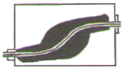
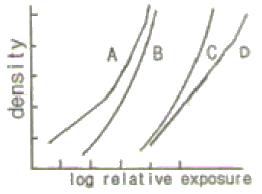

방사선비파괴검사기사(구) (2010-03-07 기출문제)
1과목: 방사선투과시험원리
1. 다음 중 X선 및 γ선의 특성이 아닌 것은?
- 전자파이다.
- 전리작용이 있다.
- 전자장에 의해 편향된다.
- 운동에너지를 가지고 있다.
(정답률: 알수없음)

2. 방사선투과 촬영된 필름에 초생달 모양의 흰 자국이 생기는 경우로 가장 적절한 것은?
- 정착액이 약화되었을 때
- 현상 중 온도변화가 심할 때
- 촬영 전 필름이 구겼을 때
- 촬영 후 름이 구겼을 때
(정답률: 알수없음)
3. 내부전환(Internal conversion)에 관한 설명으로 옳은 것은?
- 핵의 과잉에너지가 β선으로 방출된다.
- 궤도전자가 방출된 후 특성 X선이 방출된다.
- γ선이궤도전자와 충돌로 에너지가 약해진다.
- 불안정한 핵이 궤도전자를 포획한 후 특성 X 선을 방출한다.
(정답률: 알수없음)
4. X선 필름의 필름특성곡선에서 사진농도 2.10일 때 노출량이 4mA × 52s, 사진농도 1.90일 때 노출량 4mA × 44s 이었다면 이 두 농도의 사이의 평균 필름 콘트라스트는 약 얼마인가?
- 1.60
- 2.76
- 3.62
- 4.92
(정답률: 알수없음)
5. 다음 동위원소 중 고유 비방사능이 가장 큰 것은?
- Ir-192
- Cs-137
- Co-60
- Tm-170
(정답률: 알수없음)
6. X선 발생장치에서 관전압이 80kV일 때 발생하는 X선의 최단파장은 약 얼마인가?
- 0.04Å
- 0.08Å
- 0.12Å
- 0.16Å
(정답률: 알수없음)
7. 서로의 관계가 반비례가 아닌 비례관계가 성립되는 것은?
- 주파수와 파장
- 방사능과 비방사능
- 전기저항과 전기전도도
- 표피효과와 전류의 침투깊이
(정답률: 알수없음)
8. 전자포획 할로겐 검출기의 특성에 대한 설명으로 틀린 것은?
- 구성 물질에 해가 되는 가열전극이 없다.
- 가열양극법과 비교하여 교정이 안정적이다.
- 대기 중에 존재하는 불순물을 검출하는데 높은 감도를 갖는다.
- 일시적으로 감도가 감소되어도 과노출이나 사용 정도에 따라 교정이 변하거나 장비가 손상되지 않는다.
(정답률: 알수없음)
9. 일반적으로 매 검사마다 소모성 재료비가 가장 많이 소요되는 비파괴검사는?
- X선투과시험
- 와전류탐상시험
- 초음파탐상시험
- X선투시영상시험
(정답률: 알수없음)
10. 결함 면적이 동일하다고 가정할 때 와전류탐상시험으로 가장 잘 검출할 수 있는 결함은?
- 와류가 흐르는 방향에 평행인 균열
- 봉의 외측 표면으로 뻗쳐 있는 방사상 균열
- 직경5cm 봉의 중간(2.5cm) 부위에 있는 결함
- 직경 5cm 봉의 표면으로 부터 2cm 깊이에 있는 방사상 균열
(정답률: 알수없음)
11. 침투탐상시험에서 침투액의 점성에 대한 설명 중 옳은 것은?
- 온도가 낮을수록 점성은 높아지고 침투시간은 길어진다.
- 온도가 낮을수록 점성은 낮아지고 침투시간은 짧아진다.
- 온도가 높을수록 점성은 높아지고 침투시간은 짧아진다.
- 온도가 높을수록 점성은 낮아지고 침투시간은 길어진다.
(정답률: 알수없음)
12. 각종 비파괴검사의 적용에 관한 설명으로 틀린 것은?
- 와전류탐상검사는 자성체의 내부결함 검사에 적용한다.
- 초음파탐상검사는 내부결함이나 불연속 검사에 적용한다.
- 침투탐상검사는 표면의 작은 균열이나 흠집 검출에 적용한다.
- 방사선투과검사는 내부의 결함이나 형태를 검사하는데 적용한다.
(정답률: 알수없음)
13. 결함의 생성 중에는 검출이 용이하지만 결함의 생성이 정지된 상태에서는 검출이 어려운 비파괴검사법은?
- 초음파(Ultrasonic)탐상시험
- 방사선(Radography)투과시험
- 와전류(Eddy Current)탐상시험
- 음향(Acoustic Emission)방출시험
(정답률: 알수없음)
14. 프로드를 이용한 원형자화법에서 3인치 미만의 프로드 간격을 사용하지 않는 주된 이유는?
- 국부과열을 방지하기 위함이다.
- 시험자가 감전될 우려가 있기 때문이다.
- 전극 주위로 자분이 응집되기 때문이다.
- 아크 발생으로 인한 시험체의 소손을 방지하기 위함이다.
(정답률: 알수없음)
15. 자화곡선과 관련한 내용의 설명으로 옳은 것은?
- 항자력의 크기는 자화의 강도와 무관하다.
- 잔류자기가 많이 남게 되는 것은 저탄소강이다.
- 고탄소강과 같이 자화가 어려운 재질은 투자율이 낮다.
- 투자율과(μ)은 보자력과 함께 자계의 세기를 결정하게 된다.
(정답률: 알수없음)
16. 1[atm]에 대한 단위의 환산이 틀린 것은?
- 7.6torr
- 14.7psi
- 101.3kPa
- 760mmHg
(정답률: 알수없음)
17. 와전류탐상시험으로 검사가 어려운 것은?
- 내부결함 검사
- 관의 표면균열
- 도금두께 측정
- 관의 외경변화
(정답률: 알수없음)
18. 자분탐상시험과 비교한 팀투탐상시험의 장점은?
- 자분탐상시험에 비하여 표면하의 결함검출이 용이하다.
- 자분탐상시험에 비하여 자성체의 탐상에 신뢰도가 높다.
- 자분탐상시험에 비하여 표면의 원형결함 검출 감도가 높다.
- 자분탐상시험에 비하여 시간이 경과해도 지시모양의 변화가 없다.
(정답률: 알수없음)
19. 초음파탐상시험의 장점에 대한 설명으로 틀린 것은?라미네이션과 같은 결함탐상에 유용하다.
- 라미네이션과 같은 결함탐상에 유용하다.
- 균열과 같은 미세한 결함을 검출할 수 있다.
- 검사되는 시험체의 두께에 대한 제한이 적다.
- 조대한 결정입자를 가진 시험체의 검사에 적합하다.
(정답률: 알수없음)
20. 초음파탐상시험으로 알 수 없는 것은?
- 주파수의 측정
- 미세균열 검출
- 시험편의 두께
- 평균 입자의 크기
(정답률: 알수없음)
2과목: 방사선투과검사
21. 방사선 투과사진상에서 농도의 불균일성에 대한 시각적 느낌을 나타내는 것은?
- 입상성(Graininess)
- 감도(Sensitivity)
- 선명도(Definition)
- 입도(Granularity)
(정답률: 알수없음)
22. 보통 단조품에 대해서 방사선 투과검사를 적용하지 않는 이유로 가장 적절한 것은?
- 같은 두께라 하더라도 고에너지의 방사선 장치가 필요하기 때문에
- 불연속부의 형태가 방사선 투과검사로 검출하기엔 부적합하기 때문에
- 단조품을 방사선 투과검사할 경우 결함의 크기를 파악할 수 없기 때문에
- 방사선 투과검사 촬영시 방사선의 산란이나 회절현상이 많이 발생되기 때문에
(정답률: 알수없음)
23. 다음 중 방사선 투과검사에 사용되는 Ir-192 선원의 붕괴도표(decay chart)상에 표기되어 있지 않는 것은?
- 현상조건
- 선원의 크기
- 선원의 제조일
- 선원의 강도
(정답률: 알수없음)
24. X선 발생장치에서 양극(anode)이 텅스텐으로 된 X 선관에 300kvp의 전압을 걸었을 때 X선의 발생효율은 얼마인가? (단, 텅스텐의 원자번호는 74이다.)
- 1.1%
- 2.2%
- 11%
- 22%
(정답률: 알수없음)
25. X선 발생장치로 방사선 투과검사를 실시할 경우 필름의 양면과 직접 접촉하여 사용된 연박증감지가 상질에 가장 바람직한 효과를 얻을 수 있는 관전압의 범위는?
- 150~400kVp
- 500~750kVp
- 800~1000kVp
- 1100~2000kVp
(정답률: 알수없음)
26. 방사선 투과사진의 식별도를 좋게 하기 위한 조건이 아닌 것은?
- 에너지가 큰 선원을 사용한다.
- 필름 콘트라스트를 크게 한다.
- 피사체 콘트라스트를 크게 한다.
- 선원의 초점이 작은 것을 사용한다.
(정답률: 알수없음)
27. 오스테나이트계 스테인리스강 용접부의 투과사진 촬영에서 실제로 결함이 아닌데 방사선의 간섭현상에 의해 결함처럼 나타나는 상은?
- 무늬(fringe)
- 블루밍(blooming)
- 인공흠(artifacts)
- 모들링상(mottling image)
(정답률: 알수없음)
28. γ선 조사장치를 사용할 때 노출에 필요한 적절한 빔을 만들기 위해 가이드 튜브 끝에 부착하는 부품의 명칭은?
- 피그테일(pigtail)
- 콜리메타(collimator)
- 집속컵(focusing cup)
- 원격제어장치(remote controller)
(정답률: 알수없음)
29. 다음 중 고감도 투과촬영법으로 120mm 두께의 압력용기 용접부를 검사할 때 가장 적합한 선원은?
- Co-60
- Ir-192
- Cs-137
- 250kV X선
(정답률: 알수없음)
30. 두께 20mm의 알루미늄 용접부를 Ir-192로 촬영할 때 알루미늄의 강에 대한 등가계수는 0.35라면 강의 노출 도표에서 읽어야 할 시험체의 두께는 얼마인가?
- 7.0mm
- 13.0mm
- 20.35mm
- 27.15mm
(정답률: 알수없음)
31. X선 발생장치를 사용하여 방사선에 노출된 필름을 수동으로 탱크 현상할 때 다음 중 가장 적합한 온도와 시간은?
- 60℉에서 3~8분
- 68℉에서 5~8분
- 70℉에서 12~15분
- 85℉에서 3~5분
(정답률: 알수없음)
32. 전자파와 물질과의 상호작용 중 전자쌍 생성이 일어날 수 있는 광자에너지 준위는?
- 0.025~0.1MeV
- 0.1~0.5MeV
- 0.5~1.0MeV
- 1.02MeV 이상
(정답률: 알수없음)
33. 다음 중 주강품에서 발견할 수 없는 결함은?
- 균열
- 라미네이션
- 기공
- 모래 개재물
(정답률: 알수없음)
34. 이동방사선 투과검사(In-motion radiography)에 관한 설명으로 옳지 않은 것은?
- 실린더형 시험체의 길이이음용접부에 적용할 수 있다.
- 조리개를 사용하여 X선의 빔폭을 좁게 하여 선원을 길이방향으로 이동한다.
- 2개 이상의 길이이음용접부가 있는 경우 적용하기가 곤란하다.
- 모든 용접부에 대한 방사선 투과사진이 동일한 농도를 갖도록 하는 것이 중요하다.
(정답률: 알수없음)
35. 구비할 조건을 충분히 만족한 경우에도 관찰조건이 적정하지 않으면 투과사진의 판단에 오류를 범함 수 있다. 다음 중 관찰조건에 영향을 미치는 인자로 가장 거리가 먼 것은?
- 관찰실의 밝기
- 관찰자의 시력
- 필름관찰기의 밝기
- 투과도계의 식별한계 콘트라스트
(정답률: 알수없음)
36. 다음 중 X선 회절법에 의한 비파괴검사법으로 판단하기 가장 어려운 것은?
- 결정구조
- 결함의 크기
- 화합물의 종류
- 어닐링이 금속에 미치는 영향
(정답률: 알수없음)
37. 그림은 일반적인 γ선 조사기의 내부구조를 나타낸 것이다. 그림과 같이 선원이 이동하는 부분이 S자 모양으로 되어 있는 이유는?

- 선원의 이동을 원활하게 하기 위하여
- γ선 조사기의 파손을 방지하기 위하여
- γ선 조사기의 내구성을 향상시키기 위하여
- 선원출구에서 방사선 누출을 최소화하기 위하여
(정답률: 알수없음)
38. X선 발생장치의 관전류 바늘이 매우 불안전하게 움직이고 있다면 이러한 이유로 보기에 가장 거리가 먼 것은?
- 전원 전압의 변동
- X선관의 진공도 저하
- 관전류 회로의 접촉불량
- 가열용 변압기 1차측의 단선
(정답률: 알수없음)
39. 노출되지 않은 필름의 장기 보관으로 인하여, 현상 후 광학 농도가 증가하는 현상은?
- 고유뿌염
- 시효뿌염
- 노출뿌염
- 이색성뿌염
(정답률: 알수없음)
40. 그림은 X선 필름의 특성을 나타낸 필름특성곡선이다. 다음 중 가장 노출시간이 짧은 필름은?

- A형 필름
- B형 필름
- C형 필름
- D형 필름
(정답률: 알수없음)
3과목: 방사선안전관리,관련규격및컴퓨터활용
41. 보일러 및 압력용기에 대한 방사선투과검사(ASME Sec.V,Art.2)에서 X선원으로 만든 방사선 투과사진의 경우 1장의 필름 관찰에 대한 최소농도는?
- 1.0
- 1.3
- 1.8
- 4.0
(정답률: 알수없음)
42. 보일러 및 압력용기에 대한 방사선투과검사(ASME Sec.V,Art.2)에 따라 단벽관찰법으로 촬영할 경우 구간 위치 마커의 위치에 대한 설명으로 틀린 것은?
- 평판 용접부는 구간 표지에서 필름 끝단 부위간 거리가 충분한 여유가 없으면 선원측 표면에 부착한다.
- 방사선원이 곡면의 오목진 곳에 있고 선원•필름간 거리가 시험체 반경보다 작으면 선원측 표면에 부착한다.
- 방사선원이 곡면의 오목진 곳에 있고 선원•필름간 거리가 시험체 반경보다 길면 필름측 표면에 부착한다.
- 방사선원이 곡면의 볼록진 곳에 있을 때에는 필름측 표면에 부착한다.
(정답률: 알수없음)
43. 선원으로부터 3m 거리에서의 방사선의 세기가 75R/h일 때 이 선원으로부터 10m 거리에서의 방사선의 세기는?
- 6.75R/h
- 22.5R/h
- 250R/h
- 833R/h
(정답률: 알수없음)
44. 강 용접 이음부의 방사선 투과시험방법(KS B 0845)에 따라 상질을 B급으로 하여 검사할 경우 모재 두께별 투과도계의 식별 최소 선지름으로 옳지 않은 것은?
- 모재 두께 100mm 초과 125mm 이하 : 1.0mm
- 모재 두께 125mm 초과 160mm 이하 : 1.25mm
- 모재 두께 200mm 초과 250mm 이하 : 1.6mm
- 모재 두께 250mm 초과 320mm 이하 : 2.5mm
(정답률: 알수없음)
45. 주강품의 방사선 투과시험방법(KS D 0227)에서 동일한 시험시야 내에 4급인 기포와 5급인 수지상 수축관이 혼재되어 있는 경우 종합적인 등급분류는 어떻게 되는가?
- 3급
- 4급
- 5급
- 6급
(정답률: 알수없음)
46. 필름 배지(Film badge)에 대한 설명으로 옳은 것은?
- 피폭 기록의 보존이 가능하다.
- 방사선 종류의 구분 측정은 용이하지 않다.
- 착용자가 직접 판독하므로 자기감시가 수월하다.
- 온도에 둔감하여 작업 후 200℃ 오븐에서 보관한다.
(정답률: 알수없음)
47. 다음 중 피목방사선량의 물리적 정의를 잘못 표현한 것은?
- 조사선량 - X선 또는 γ선에 의하여 공기단위질량당 생성된 전하량
- 흡수선량 - 방사선에 피폭되는 물질의 단위질량당 흡수된 방사선의 에너지
- 등가선량 - 인체의 피폭되는 물질의단위질량당 흡수된 방사선의 에너지
- 유효선량 - 각 조직의 흡수선량에 해당조직의 가중치를 곱하여 피폭한 모든 조직에 대해 합산한 양
(정답률: 알수없음)
48. 주강품의 방사선 투과시험방법(KS D 0227)에서 투과 두께가 12mm이며, 투과사진의 영상질이 A급일 때 두과도계의 식별 최소 선지름은 몇 mm인가?
- 0.10mm
- 0.125mm
- 0.20mm
- 0.25mm
(정답률: 알수없음)
49. 보일러 및 압력용기에 대한 방사선투과검사(ASME Sec. V Art.22. SE-94)에 따른 필름 콘트라스트에 영향을 미치는 주요 인가자가 아닌 것은?
- 농도
- 현상의 정도
- 필름의 종류
- 산란방사선
(정답률: 알수없음)
50. 알루미늄 평판 접합 용접부의 방사선 투과시험방법(KS D 0242)에 따라 시험할 때 상질이 B 급일 때 투과사진의 농도 범위로 옳은 것은?
- 1.0이상 3.0이하
- 1.0이상 3.5이하
- 1.8이상 3.5이하
- 2.0이상 4.0이하
(정답률: 알수없음)
51. 외부피목 예방의 3원칙과 거리가 먼 것은?
- 거리를 멀리할 것
- 차폐를 두껍게 할 것
- 작업시간을 짧게 할 것
- 흡입 마스크를 착용할 것
(정답률: 알수없음)
52. 방사성동위원소 등의 사용자에대한 정기검사 시기로 잘못 연결된 것은?
- 방사성동위원소를 인체에 사용하는 사업소 : 매년 1년마다
- 밀봉된 방사성동위원소의 연간 판매량이 370TBq 이상으로 판매허가를 받은 자 : 매 1년마다
- 밀봉된 방사성동위원소를 연간 판매량이 370TBq 미만으로 판매허가를 받은 자 : 매 3년마다
- 방사선 발생장치의 판매허가를 받은 자 : 매 1년마다
(정답률: 알수없음)
53. 강 용접 이움부의 방사선 투과시험방법(KS B 0845)에 따라 초잠의 크기가 5.0㎜인 X선 발생장치로 두께가 30.0㎜ 인 강 용접부를 촬영하여 A급 투과사진 업고자 한다. 투과도계와 필름간의 거리가 33㎜이었다면 선원과 필름간의 거리는 최소 얼마로 하여야 하는가? (단, A급에서 투과도계 식별 최소 선지름은 0.50㎜이다.)
- 198㎜
- 375㎜
- 445㎜
- 660㎜
(정답률: 알수없음)
54. 보일러 및 압력용기에 대한 방사선투과검사 (ASME Sec.V.Aet.2)에서 선원의 크기 3㎜, 선원과 필름간 거리 80㎝, 선원과 검사체 사이 거리 700㎜일 때 기하학적 불선명도는 약 얼마인가?
- 0.135㎜
- 0.429㎜
- 0.625㎜
- 42.8㎜
(정답률: 알수없음)
55. 디음 중 방사선 종사자의 건강검진을 실시하는 시기에 대하여 원자력 법령에 규정하는 경우가 아닌 것은?
- 최초 방사선작업에 종사하기 전
- 방사선작업 종사직에서 이직할 때
- 방사선작업에 종사 중인 자는 매년
- 방사선작업종사자가 선량한도를 초과한 때
(정답률: 알수없음)
56. 컴퓨터 운영체제에서 링커(linker)의 역할은?
- 원시 프로그램을 기계어로 번역한다.
- 목적 프로그램을 실행하기 위해 메모리에 적재한다.
- 여러 개의 목적 모듈을 모아서 실행 가능한 프로그램으로 만든다.
- 인터럽트 발생 시 인터럽트 처리 루틴으로 제어권을 부여한다.
(정답률: 알수없음)
57. 데이터통신 시스템 중 데이터 터미널 장치(DTE)의 기능이 아닌 것은?
- 입∙출력 기능
- 신호 변환 기능
- 전송 제어 기능
- 기억 기능
(정답률: 알수없음)
58. 네트워크에서 도메인이나 호스트 이름을 숫자로 된 IP 주소로 해석해 주는 YCP/IP 서비스는?
- DNS
- Protocol
- Router
- ARPANET
(정답률: 알수없음)
59. 오류의 검출과 교정까지 가능한 코드는?
- 자기 보수 코드
- 가중치(Weighted) 코드
- 오류 검출 코드
- 해밍(Hamming) 코드
(정답률: 알수없음)
60. 컴퓨터의 기종에 관계없이 웹페이지를 작성하는 언어를 가리키는 말로서 여러 가지 태크를 이용하여 문단 형식이나 표, 글자, 크기를 지정하는 것은?
- 하이퍼텍스트(Hyper text)
- 하이퍼미디어)Hypermedia)
- HTML(Hyper Text Markup Language)
- HTTP(Hyper Text Transfer Protocol)
(정답률: 알수없음)
4과목: 금속재료학
61. 시효처리에 대한 설명으로 틀린 것은?
- 과포화 고용체를 이용한 제2상의 석출과정이다.
- 온도가 높거나 시간이 길면 복원현상이 나타난다.
- 시효처리는 온도의 증가에 따른 취성증대가 목표이다.
- Al-Cu 합금의석출과정은 과포화고용체 → G.P대 → 중간상 → 안정상 순이다.
(정답률: 알수없음)
62. 오스테나이트계 스테인리스강의 부식 중 공식(pitting)은 부동태 피막을 국부적으로 파괴 또는 관통하는 것을 말하는데, 이러한 공식을 방지하기 위한 대책으로 틀린 것은?
- 할로겐 이온늬 농도를 많게 한다.
- 질산염, 크롬산염 등을 첨가한다.
- 산소농당전지의 형성을 피하거나 부식생성물을 제거 한다.
- 재료 중 C를 적게 하거나 Ni, Cr, Mo 등을 많게 한다.
(정답률: 알수없음)
63. 금속을 원자로용, 고융점구조재료, 반도체, 알칼리토류군(群)으로 분류할 때 반도체군에 해당되는 것은?
- W, Re
- Na, Li
- Ge, Si
- U, Th
(정답률: 알수없음)
64. 순철의 자기 변태점에 대한 설명으로 옳은 것은?
- 가열에 의해 BCC 격자가 FCC 격자로 변한다.
- A2변태라 하며 약 768℃에서 일어난다.
- A3변태라 하며 약 910℃에서 일어난다.
- A4변태라 하며 약 1200℃에서 일어난다.
(정답률: 알수없음)
65. 심냉(Sub-zero)처리를 실시하는 이유로 옳은 것은?
- 오스테나이트를 펄라이트로 변태시키기 위하여
- 펄라이트를 마텐자이트로 변태시키키 위하여
- 반류 오스테나이트를 마텐자이트로 변태기키기 위하여
- 트루스타이트를 마텐자이트로 변태기키기 위하여
(정답률: 알수없음)
66. 다음 중 가단주철의 종류에 속하지 않는 것은?
- 백심 가단주철
- 흑심 가단 주철
- 펄라이트 가단주철
- 편상 혹연 가단주철
(정답률: 알수없음)
67. 고속도공구강의 특징을 설명한 것 중 틀린 것은?
- 고온경도 및 내마모성이 크며 인성을 가진다.
- 템퍼링 처리에 의해 2차 경화하는 설질이 있다.
- W계 고속도공구강의 기본 조성은 18%W-4%Cr-1%V이다.
- 절삭성은 우수하나 경도, 강도는 탄소강보다 낮다.
(정답률: 알수없음)
68. 황동 합금 중에서 조직이 α+β이므로 상온에서 전연성이 낮으나 강도가 크고, 6:4 황동이라 불리우는 합금은?
- 문쯔 메탈(muntz metal)
- 카트리즈 브라스(cartridge brass)
- 길딩 메탈(gilding metal)
- 로우 브라스(low brass)
(정답률: 알수없음)
69. 판재를 원판으로 뽑기 위해 하중 9300㎏을 가했을 때의 전단응력은 약 몇 ㎏t/cm2 인가? (단, 원판의 직경은 30㎜, 판재의 두께는 2.7㎜이다.)
- 3455
- 3655
- 3855
- 4⑤5
(정답률: 알수없음)
70. 기계구종용 강에서 마텐자이트를 뜨임 제1단계에서 실시하여 인장강도 140㎏t/mm2 이상, 항복점 120㎏t/mm2 이상의 기계적 성질을 갖도록 한 강을 무엇이라 하는가?
- 초강인강
- 마르에잉징강
- 기계구조용 탄소강
- 기계구조용 저합금강
(정답률: 알수없음)
71. 다음의 첨가 원소 중 강의 경화능을 가장 향상시크는 원소는?
- Sn
- Si
- Cu
- Mn
(정답률: 알수없음)
72. 다음 중 백금(Pt)에 대한 설명으로 옳은 것은?
- 백금은 회백색의 체심입방정 금속이다.
- 비중은 6.7이고, 용융점은 670℃ 정도이며 내식성이 좋으므로 화학공업에 사용한다.
- 백금은 산화되지 않으나 P, S, Si 등의 알칼리, 알칼리토금속의 염류에는 침식된다.
- 45%~85%Rh 합금은 열전대로 사용하며, 0.8%~5%Pd의 백금합금은 장식용으로 사용한다.
(정답률: 알수없음)
73. 비정질 금속을 제조하는 방법이 아닌 것은?
- 원심 급냉법
- 침지법
- 진공 증착법
- 전기 또는 화학도금법
(정답률: 알수없음)
74. Mg 합금이 구조재료로서 갖는 특성에 관한 설명으로 틀린 것은?
- 소성가공상이 높아 상온변형이 쉽다.
- 비강도가 커서 항공우주용 재료에 유리하다.
- 감쇠능이 주철보다 커서 소음 방지 대료로 우수하다.
- 기계가공상이 좋고 아름다운 절삭면이 얻어진다.
(정답률: 알수없음)
75. Al 및 합금의 질별 기호에서 H가 의미하는 것은?
- 제조한 그대로인 것
- 풀림을 한 것
- 가공 경화한 것
- 용체화 처리한 것
(정답률: 알수없음)
76. 상온에서 BCC(body-centered cubic lattice)의 결정구조인 것은?
- Ag, Au, V, Be
- Ba, Fe, K, V
- Zn, Zr, La, Mg
- Al, Fe, Cu. Co
(정답률: 알수없음)
77. 금속의 냉간가공(cold working)시 나타나는 성질로 옳은 것은?
- 인장간도가 감소한다.
- 전기전도도가 감소한다.
- 단면수축률이 증가한다.
- 화학반응성이 감소한다.
(정답률: 알수없음)
78. 일반구조용강에서 청열취성이 원인이 되는 고용 성분은?
- N
- V
- Al
- Nb
(정답률: 알수없음)
79. 60%Cu-35%Zn-5%Al의 조성을 가진 합금ㅇ에서 걸보기의 아연 함유량은 몇 % 인가? (단, Al의 아연 당량은 6이다.)
- 25%
- 32%
- 48%
- 52%
(정답률: 알수없음)
80. Ti의 기계적 성질에 대한 설명으로 틀린 것은?
- 불순물에 의한 영향이 크다.
- 면심입방금속이므로 소성변형의 제약이 많다.
- 내력/인장강도늬 비가 1에 가깝다.
- 상온에서 300℃ 근방의 온도 구역에서도 강도의 저하가 뚜렷하게 나타난다.
(정답률: 알수없음)
5과목: 용접일반
81. 황동 합금성분 중 경납땜 재료로 사용할 수 없는 것은?
- Cu 60%-Zn 40%
- Cu 55%-Zn 45%
- Cu 50%-Zn 50%
- Cu 30%-Zn 70%
(정답률: 알수없음)
82. 서브머지드 아크 용접법의 장점 설명으로 틀린 것은?
- 용입이 깊다.
- 비드 외관이 매우 아름답다.
- 용유속도 및 용착속도가 빠르다.
- 적용재료에 제한을 받지 않는다.
(정답률: 알수없음)
83. 피복 아크 용접에서 직류저극성의 특징으로 틀린 것은?
- 비드 폭이 좁다.
- 모재의 용입이 깊다.
- 열, 분배는 용접봉에 30%, 모재에 70% 정도이다.
- 박판, 주철, 합금강, 비철금속의 용접에만 쓰인다.
(정답률: 알수없음)
84. 용접부의 취성파괴에 대한 일반적인 특징 설명으로 가장 적합한 것은?
- 파단은 판 표면에서의 45° 각도로 발생한다.
- 항복점 이하의 평균응력에서는 발생하지 않는다.
- 온도가 높을수록 발생하기 쉽다.
- 취성파괴의 기점은 응력과 변형이 집중하는 곳에서부터 발생한다.
(정답률: 알수없음)
85. 용접봉의 용융속도를 가장 잘 설명한 것은?
- 단위시간당 소비되는 모재의 무게
- 단위시간당 소비된 용접봉의 길이 또는 무게
- 일정량의 모재가 소비될 때까지의 시간
- 일정길이의 용접봉이 소비될 때까지의 시간
(정답률: 알수없음)
86. 내용적 40ℓ의 산소용기에 140 기압의 산소가 들어 있다. 가변압식 토치로 400번 팁을 사용하여 혼합비 1:1의 표준 불꽃으로 작업하면 몇 시간 작업할 수 있는가?
- 7시간
- 9시간
- 12시간
- 14시간
(정답률: 알수없음)
87. 판 두께 9㎜, 루트간격 1.5㎜인 연강판을 4㎜ 용접봉으로 피복 아크 용접 아래보기 V형 맞대기 이음 시 용접 전류로 가장 적당한 것은?
- 18~100A
- 100~130A
- 140~160A
- 180~200A
(정답률: 알수없음)
88. 가스용접봉의 성분이 모재에 미치는 영향을 잘못 설명한 것은?
- 탄소(C) - 강의 강도, 연신율, 굽힘성이 감소된다.
- 규소(Si) - 기공은 막을 수 있으나 강도가 떨어진다.
- 인(P) - 강에 취성을 주고 가연성을 잃게 한다.
- 황(S) - 용접부의 자항력을 감소시키고 기공 발생의 원인이 된다.
(정답률: 알수없음)
89. 가스용접용 토치는 사용하는 아세틸렌가스 압력에 의하여 저압식, 중압식, 고압식으로 나누어진다. 저압식 토치의 아세틸렌 공급압력으로 가장 적합한 것은?
- 2.50㎏f/cm2 이상
- 0.07㎏f/cm2 이상
- 0.4㎏f/cm2 이상
- 1.5㎏f/cm2 이상
(정답률: 알수없음)
90. 가스용접에 이용되는 가연성 가스 종류 중 연소시 가장 많은 산소(O2)를 필요로 하는 것은?
- 아세틸렌
- 수소
- 프로판
- 메탄
(정답률: 알수없음)
91. 용접법 중 융접에 속하는 것은?
- 초음파 용접
- 유도 가열 용접
- 전자 빔 용접
- 심 용접
(정답률: 알수없음)
92. 직류 및 교류 아크 용접기의 비교 내용 중 직류 용접기에 대한 설명으로 틀린 것은?
- 교류 용접기 보다 무부하 전압이 낮다.
- 교류 용접기에 비해 자기 쏠림 현상이 거의 없다.
- 교류 용접기에 비해 아크 안정성이 우수하다.
- 교류 용접기에 비해 역율리 양호하다.
(정답률: 알수없음)
93. 용접전류 500A로 10초간 용접하여 A의 제품을 형성하였다. 이때 A의 고유 전기저항을 0.5Ω라 하면 이 때의 전기 저항열은?
- 100kcal
- 10kcal
- 300kcal
- 350kcal
(정답률: 알수없음)
94. 용접 중에 아크를 중단시키면 중단된 부분이 오목하거나 납작하게 파진 모습으로 남는 것을 무엇이라고 하는가?
- 오버 랩
- 기공
- 크레이터
- 선사조직
(정답률: 알수없음)
95. 용접부 비파괴검사에서 형광침투검사의 조작순서가 가장 적합한 것은?
- 검사면세척 - 침투액적용 - 침투액세척 - 현상액 적용과 건조 - 검사
- 검사면세척 - 현상액 적용과 건조 - 침투액세척 - 침투액적용 - 검사
- 검사면세척 - 침투액세척 - 현상액 적용과 건조 - 침투액적용 - 검사
- 검사면세척 - 침투액적용 - 현상액 적용과 건조 - 침투액세척 - 검사
(정답률: 알수없음)
96. 전지저항 용접 중 이음형상이 겹치기 용접에 해당되지 않는 것은?
- 점 용접
- 프로젝션 용접
- 매시 심 용접
- 업셋 용접
(정답률: 알수없음)
97. 피복 금속 아크 용접봉 E4316은 어떤 계통의 용접봉인가?
- 저수소계
- 철분수소계
- 철분산화철계
- 고상화티탄계
(정답률: 알수없음)
98. 아크 전압 30V, 아크 전류 200A, 용접속도 10㎝/min 으로 피복 아크 용접을 하 ㄹ경우 발생하는 용접입열은 얼마인가?
- 3600 J/㎝
- 36000 J/㎝
- 6000 J/㎝
- 60000 J/㎝
(정답률: 알수없음)
99. 용접부의 자분 탐상검사에 사용되는 자분에 착색된 색의 종류가 아닌 것은?
- 백색
- 흑색
- 적색
- 회색
(정답률: 알수없음)
100. 프로젝션 용접법의 특징 설명으로 가장 적합한 것은?
- 전극의 수명이 짧고, 작업 능률이 낮다.
- 얇은 판과 두꺼운 판의 용접은 불가능하다.
- 여러 가지 변형적인 저항용접이 불가능하다.
- 2개 이상의 돌기부를 1회에 용접할 수 있으므로 용접속도가 빠르다.
(정답률: 알수없음)
X선 및 γ선은 전자파이며, 전리작용을 일으키기 때문에 물질과 상호작용하여 이미지를 생성할 수 있습니다. 또한 전자장에 의해 편향되는데, 이는 전자파가 전자를 가속시키기 때문입니다. 하지만 운동에너지를 가지고 있는 것은 아닙니다.